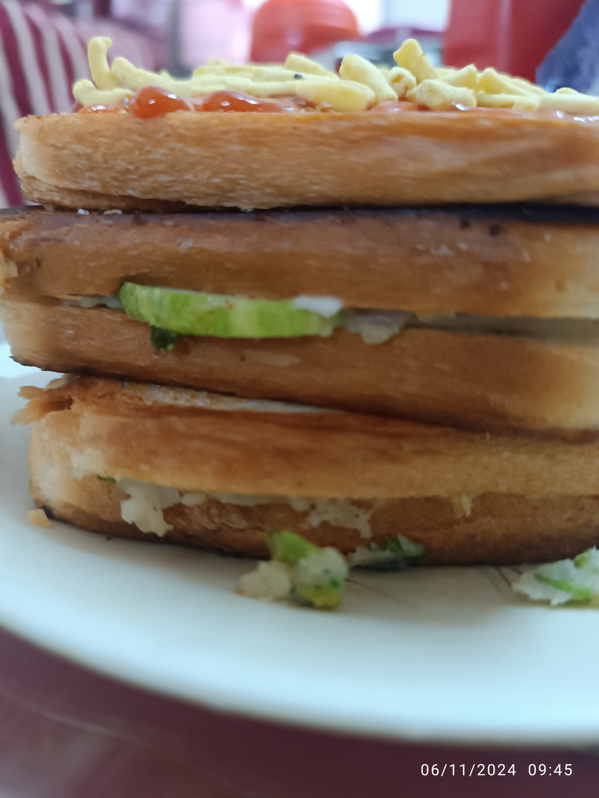
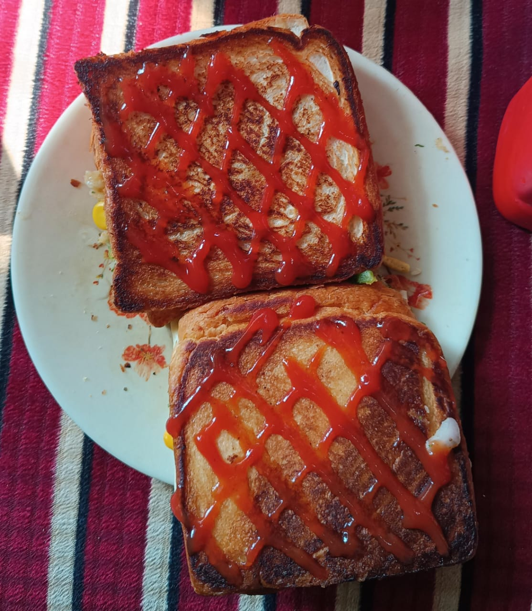
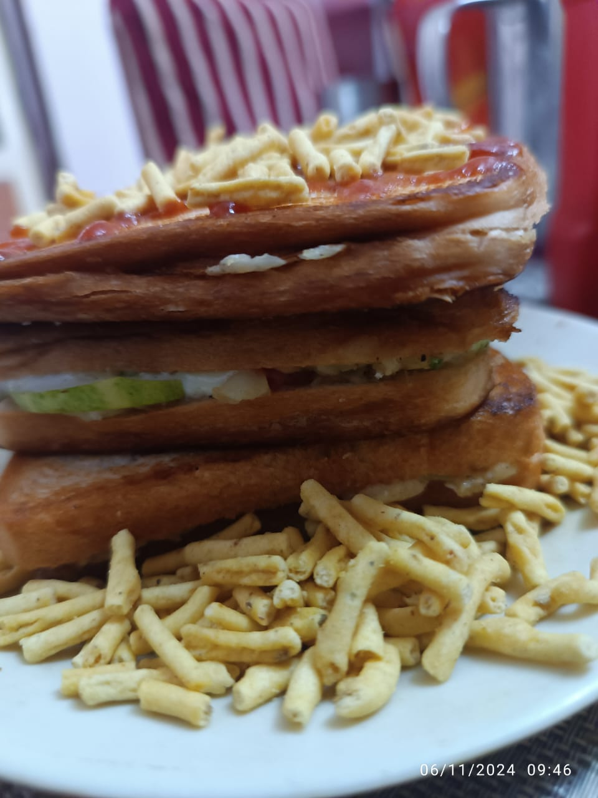
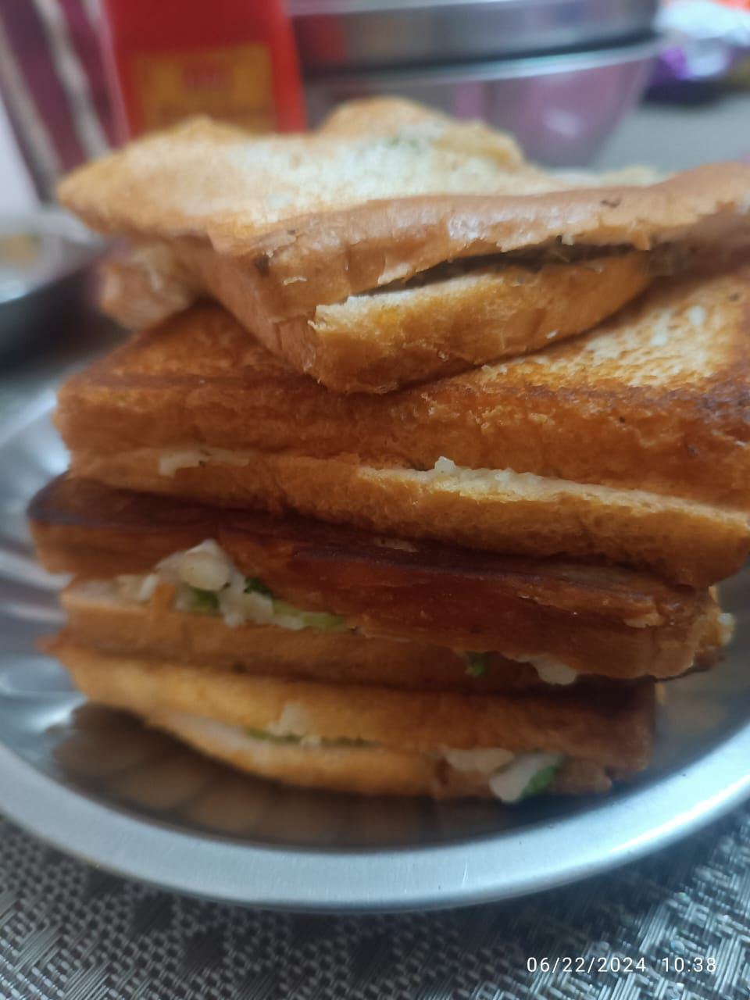

Cheese Sandwich




Description
To make a Cheese Sandwich.First boil the Potato and freezed Sweetcorn for 12mins, Now chop the Onions, Tomatoes, Capsicum, Chilly and Coriander.Smash the boiled Potatoes and mix them up with chopped vegetables, sweetcorn, Salt, black pepper and Chaat Masala.Now fill the 2 pieces of Bread with stuffing add Cheese Slice and slices of Cucumber and combine both the slices of bread together(optional: Add Oregano and Chilli Pepper).Heat the pan for medium flame apply butter then put the slices of bread let the both side get grilled and add the ketchup and Ratlami Sev at the end.
Ingredients
- Bread Slices
- Potato
- Sweetcorn
- Onion
- Tomato
- Capsicum
- Chilly
- Coriander
- Salt
- Black Pepper
- Chaat Masala
- Cucumber
- Cheese Slice
- Butter
- Ketchup
- Ratlami Sev
Steps
- Boil the Potato and Sweetcorn for 12mins
- Chop the Onions, Tomatoes, Capsicum, Chilly and Coriander
- Smash the boiled Potatoes and mix them up with chopped vegetables, sweetcorn, Salt, black pepper and Chaat Masala
- Fill the 2 pieces of Bread with stuffing add Cheese Slice and slices of Cucumber and combine both the slices of bread together
- Heat the pan for medium flame apply butter then put the slices of bread let the both side get grilled and add the ketchup and Ratlami Sev at the end